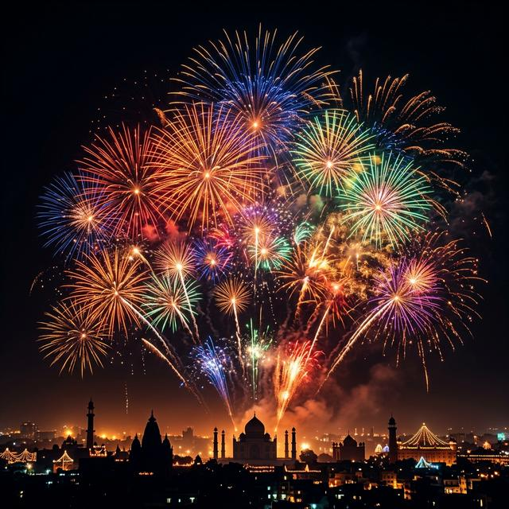
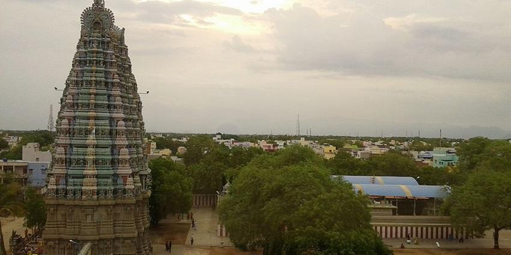
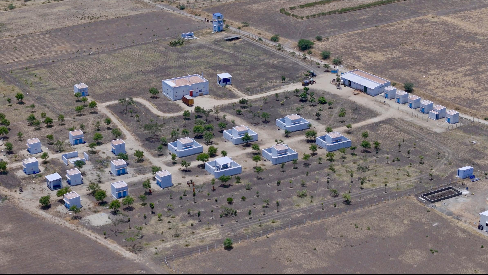
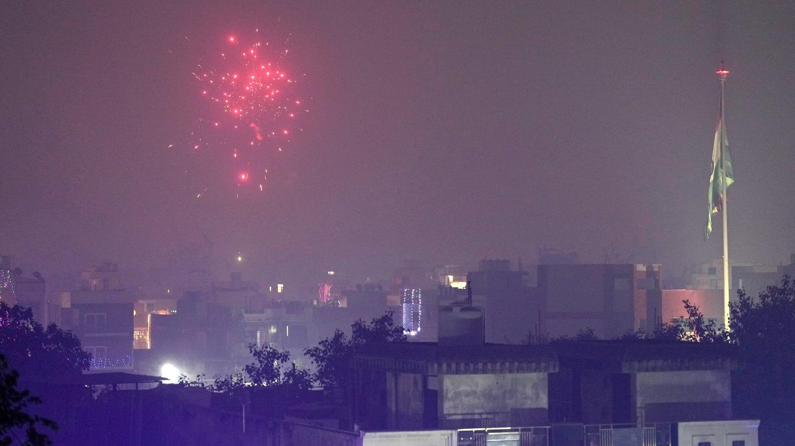

Welcome to the World of Sparks!

Welcome to Crackers of Sivakasi, a website that takes you into the colourful world of fireworks and the famous town behind them. From sparkling lights to exciting celebrations, Sivakasi has become a well-known name in India's fireworks industry.
Explore the different types of crackers, discover the story of Sivakasi and learn about the traditions, industries and people that make this town special.
About Sivakasi

Sivakasi is a famous town located in Virudhunagar district of Tamil Nadu. It is widely known for its fireworks, printing and match industries. The town is popularly called "Kutty Japan" because of its industrial development, hardworking people and business achievements.
Sivakasi plays an important role in India's fireworks industry. Its products are associated with festivals, celebrations and special occasions. The town is also known for its entrepreneurial spirit and the dedication of generations of workers.
Sivakasi is not just a place of factories; it is a town of creativity, tradition, hard work and pride.
A Spark from the Past

Sivakasi has a remarkable journey from a small town to one of India's well-known industrial centres. Its industrial development began with match manufacturing and gradually expanded into printing and fireworks production.
The growth of these industries brought new opportunities and helped Sivakasi gain recognition across India. Through the dedication, knowledge and hard work of local people, the town developed a strong industrial identity.
Today, Sivakasi is popularly known as "Kutty Japan" and is recognised for its industries, achievements and contribution to the country's economy.
Read More About Sivakasi →The Fireworks Industry

Sivakasi is one of India's major centres for fireworks manufacturing. The fireworks industry has helped the town gain national recognition and has provided employment and livelihood opportunities to many people.
Several licensed fireworks manufacturing units operate around Sivakasi. The industry produces different varieties of fireworks for festivals and celebrations. Its growth reflects the skills, experience and contribution of the people working in this field.
The fireworks industry is an important part of Sivakasi's identity and industrial history.
Explore the Types of Crackers

Fireworks come in different varieties, shapes, colours and effects. Each type creates a different visual experience during celebrations.
- Sparklers
- Flower Pots
- Ground Chakkars
- Rockets
- Fountains
Impact of Fireworks

Fireworks make celebrations colourful and exciting, but they can also create environmental and health problems when used carelessly.
- Air Pollution: Smoke and fine particles affect air quality.
- Noise Pollution: Loud sounds disturb people, birds and animals.
- Health Effects: Smoke can cause breathing discomfort and irritation, especially for sensitive people.
- Environmental Damage: Firework waste can leave litter and residues in public places.
- Animal Disturbance: Sudden sounds and bright flashes can frighten pets and wildlife.
Celebrate with Care ✨
Let every celebration shine with happiness, not harm. Celebrate responsibly and care for people, animals and the environment.